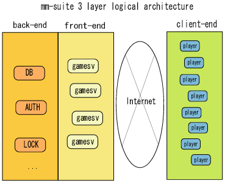

"mm-suite" server uses single threaded, multi processed programming model same as VCE itself. Some developers say that we have to use multi-threaded programming model to get a good performance, but when it comes to online games, multi-thread are not the best solution because of some reasons. Firstly, we don't use a great SMP mathines, we only use 1 or 2 CPU Intel IA32 machines for the sake of reducing total cost of ownership. Secondly, single thread gives us a great ease of debugging. Online game server program is modified all the time, so debugging and modifying server code must be easy.
"mm-suite" supports 3 layered server architecture. As shown in a figure below, "mm-suite" applications are built separated in 3 parts.

Game logic and rules are implemented mostly on the middle "gamesv" part, and presentations like user interfaces are implemented in client-side. Data storage and user exclusion(locking) are implemented as a backend service.
Separating applications in these parts can lead total cost-down because of some reasons:
- easy changing/ease of debugging
After you start online game service, you have to change game logic and rules oftener than once a months, and every time new code fragments are implemented in the gamesv. So the changes should be limited in smaller code base. By rigidly separating game server and other backend services, you can find your new bugs in short time, otherwise you have to explore vast amount of the whole program. - performance advantage
By dividing each functions into many parts, you can put each functions in each machine. When you find something in your service is a bottle neck of overall performance, you can divide the service into 2 parts and you put each of them on different machines. - Security of the contents : thin client
You had better not to put a lot of functions/rights in client-side program. You should assume that client-side program is always under control of players who have evil intension. So, in "mm-suite" sample skeleton code, we had focused on reducing client functions. You can find this in a protocol definition in sample protocol included in "mm-suite" package. - Unified, simple maintainance API
To reduce cost of online game maintainance, we suggest an unified and simple interface. For example, all "mm-suite" server processes always save "status file" in common file format. You can retrieve these files to know what's happening on the server, and what's the server performance is like.
In addition to this, you can use DBSV, LOCKSV, AUTHSV, and all servers but GMSV in any games/titles. All these components are the same in every games. So you don't have to make a new maintainance tools when you want to make a brand-new game.
Finally, you can connect to mm-suite services through TCP/IP sessions driven by VCE library from remote host. - simple and common database
There is one thing that we're always keeping in mind: "mm-suite" backend database have to be simple and commonly used. By keeping simple and single design, maintainance work gets easier.
contents of mm-suite directory
When you expand mm-suite archive file, you will see these files in it:
- authsv
Source code of mm-suite backend authentication server. - dbcommon
Source code of library that connect with mm-suite backend database server(dbsv). - dbsv
Source code of mm-suite backend database server. The player and message information will be saved by this server. - doc
A set of mm-suite documentation including this page. - gmsv
Source code of mm-suite game logic server. - locksv
Source code of mm-suite backend locking server. This program provides a exclusive user-login, that means, a player cannot log in twice at the same time. - msgsv
Source code of mm-sutie backend instant-messaging server. mm-suite has built-in instant messating server, which can server more than 50K concurrent players within a single server group. - proto
Protocol definition files. These files are processed by VCE's "gen.rb" protocol stub file generator. - swp
"swp" is originally included in "VCE" package, also used in mm-suite. "swp" is placed between game server and client-side. Connection switching are used in mm-suite demo game server. - tester
Source code of testing game server and backend services. - wincli
Source code and project files of win32 demo client. This project is built by Microsoft Visual C++ (6.0 or later) - Makefile
Short cut for starting/stopping/building mm-suite servers.
Installing mm-suite into your Linux Box
You have to have at least one linux box to test mm-suite servers. Without memory tuning, you will need more than 512M bytes of memory if you want to start all servers in one machine.
mm-suite package is tested on Linux RedHat 6.2 or later, which has glibc 2.1.3 or later, and gcc 2.91. You can compile/run/test on such environment.
Win32 demo programs included in wincli directory will be compiled by Microsoft Visual Studio 6.0 or later. You can find some documents about win32 demo client wincli document
Compiling server programs
To compile mm-suite servers, you first change directory to mmsuite top directory, and should just type on shell command line::
shell% make
Please note that before doing this, you have to install the newest VCE files in mmsuite/vce directory. At least these files are needed:
libvce???.a gen.rb vce.h swp
All these files are necessary for building/testing mm-suite server suite. You can find the newest VCE package from vce.ce-lab.net
Before starting server
Before starting servers, you have to set up MySQL server. mm-suite backend services are dependent on MySQL system. You may want to look at MySQL setup guide included in mm-suite.
When MySQL is set up, you have to initialize mm-suite default databases. mm-suite backend servers use these default databses. To initialize default database, you will type on your shell:
mysql> drop database storage2; mysql> create database storage2; mysql> drop database storage3; mysql> create database storage3;
Now you have made "storage" database in MySQL data directory. After that, you have to create data table in "storage" database.
shell % mysql -u storage storage2 < dbsv/init_table.sql shell % mysql -u storage storage3 < dbsv/init_table.sql
You you have four tables necessary for mm-suite backend services. All these steps are script in mmsuite/sqllib/Makefile. If you want to short-cut the steps, you can use the Makefile:
shell % cd mmsuite/dbsv shell % make install_tables
I think you should look at each steps at least once. That helps you to understand what is happening in MySQL and mm-suite backends.
If you have an error here, the mm-suite backend services fail to start. contact_tbl,mailbox_tbl,bbs_tbl is used by MSGSV, and char_tbl is used by DBSV.
How to compile
You have a compiled binary in "mm-suite". When you want to re-compile everything, you will type "make" in each subdirectories in "mmsuite" top directory. For example,
shell% cd mmsuite shell% cd gmsv shell% make depend shell% make shell% cd ../msgsv shell% make depend shell% make ...
This is the "each step" approach. If you want to short-cut these all steps, you can use single "make" in mmsuite top directory.
shell% cd mmsuite shell% make depend shell% make clean shell% make
But this short-cut makes you kind of confused, because the compile log will grow too much.
How to execute
There are also two ways to start up servers. First approach is a short-cut, and next is each-steps. Firstly, you can start all mm-suite backend servers and game logic servers in one command:
shell% cd mmsuite shell% make start
In this case, all output of all servers are printed out in one terminal, so you cannot find problems looking at the mixed, complex log. To avoid this, you can follow "each-steps" approach. To do this, you will do:
shell% cd dbsv shell% make start shell% cd ../authsv shell% make start shell% cd ../gmsv shell% make start
In this approach, you can start each servers in each UNIX terminals, so you don't be lost searching problems in each server. I recommend you follow this in the first time.
Most likely, you will encounter "bind error". "bind error" means that you have started the server already, and the server process cannot initialize TCP/IP network resource(port) any more. If you find this problem, you will "make stop" in the server directory you want to stop. For example, if you want to stop msgsv, you will do:
shell% cd mmsuite/msgsv shell% make stop
I know you often want to stop all backends, or all front-ends, but not both. To do so, we provide you a short-cut:
shell% cd mmsuite shell% make start_be
This command line stops all backend services. And, next,
shell% cd mmsuite shell% make start_fe
This stops all frontend(game server) in one shell line. Maybe these short cuts help your debugging.
Testing through UNIX terminal
Althogh you can test all functions of GMSV and backend services using Wincli demo program, but some simple functions are easily tested from UNIX terminal automatically. You can start test program in mmsuite/tester directory as follows:
shell% ping_test 1 100 localhost:9001 shell% auth_test 1 100 localhost:9001
Each test programs prints out a query-roundtrip time, and total elapsed time, Q/s and some statistics information. You can also make use of these programs for performance tuing. More precise information will be got here.
If successful
If successful, the servers are connected to each other, in such form:

Orange colored numbers attached with each servers are TCP port numbers. Each server process are responsible each backend services. For more information about server processes, please look at cluster-en.html.
Conclusion
Now you can expand/re-build/run/test mm-suite servers included in package, and start development cycle at once by changing source code.
Copyright 2000-2005 CommunityEngine Inc. All rights reserved.